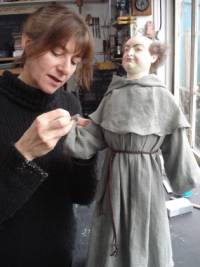

About
Jill Desborough
Jill is originally from London, but has lived in Colchester for the past 25 years, moving there after completing a Degree course in Mixed Media Design at Brighton Art College.
Her work as a freelance sculptor and modelmaker has been very varied. In addition to the work shown in the portfolios she has also sculpted, for example, a brace of dodos for the Natural History Museum in Edinburgh, done promotional work for Disney, made wax prototypes for a silversmith, made figures for the new Wimbledon Tennis Museum and sculpted the 2007 Christmas decoration wreath at Saint Pancras station.
She also makes individual character and portrait rod puppets for pleasure, exhibition or commission.